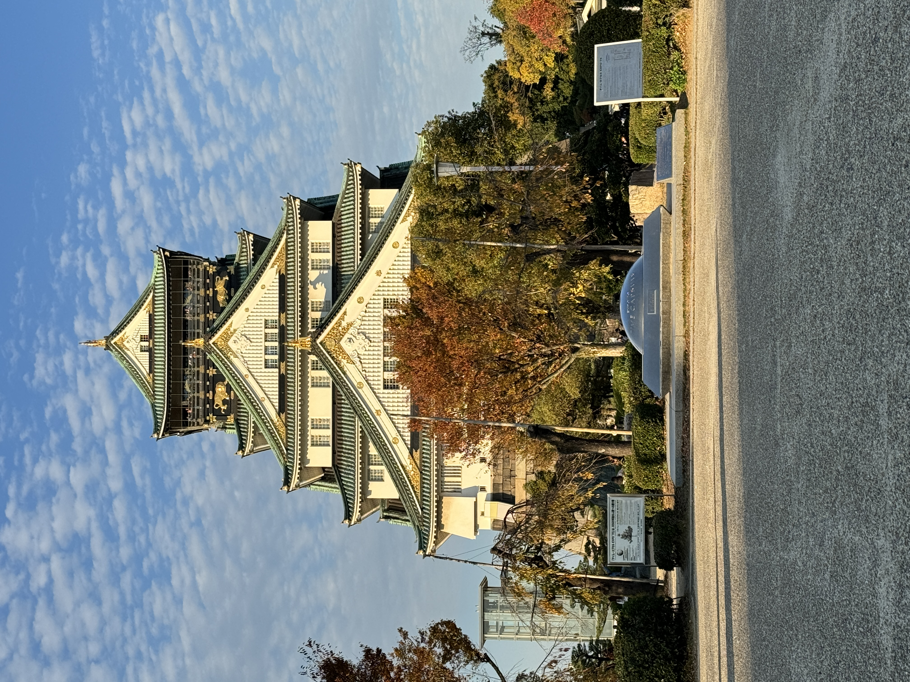
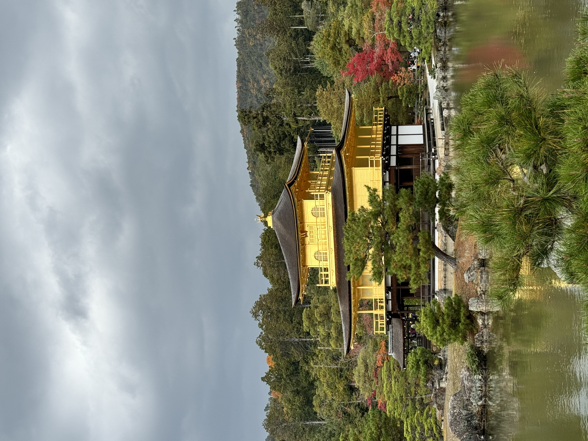
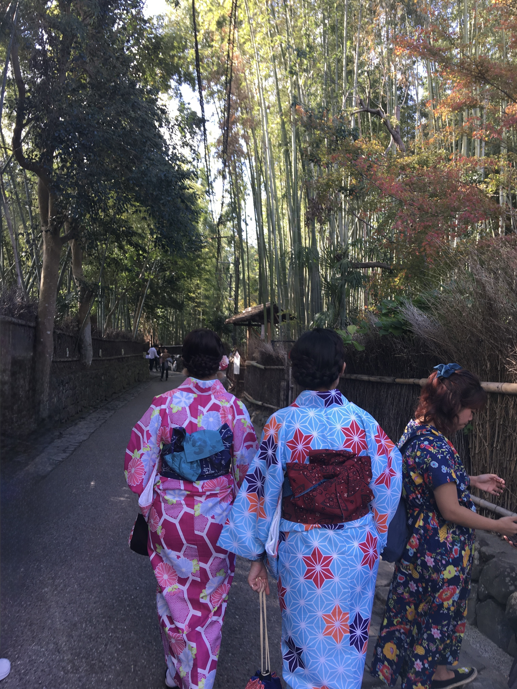
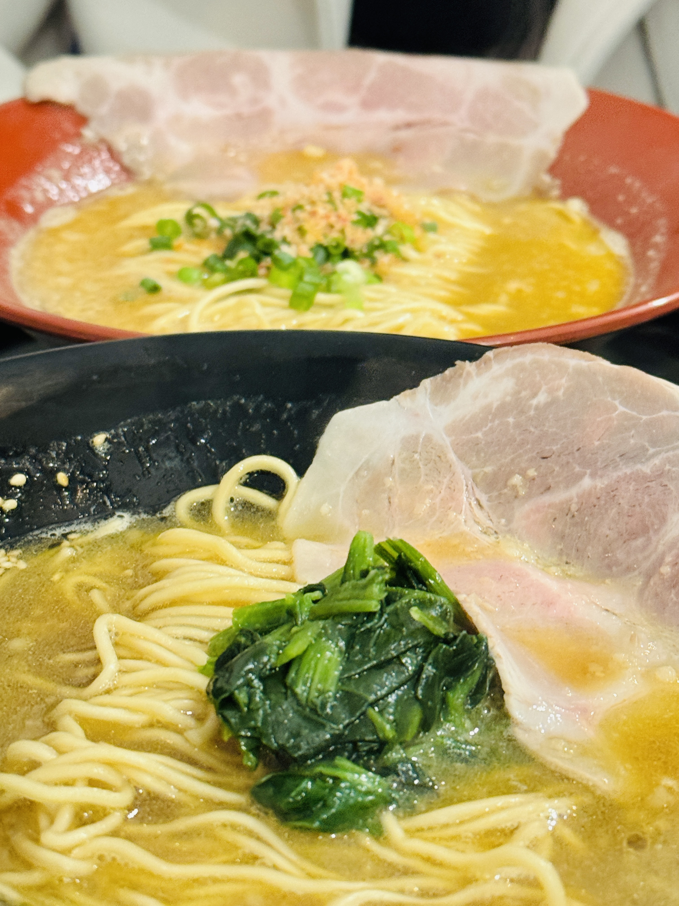
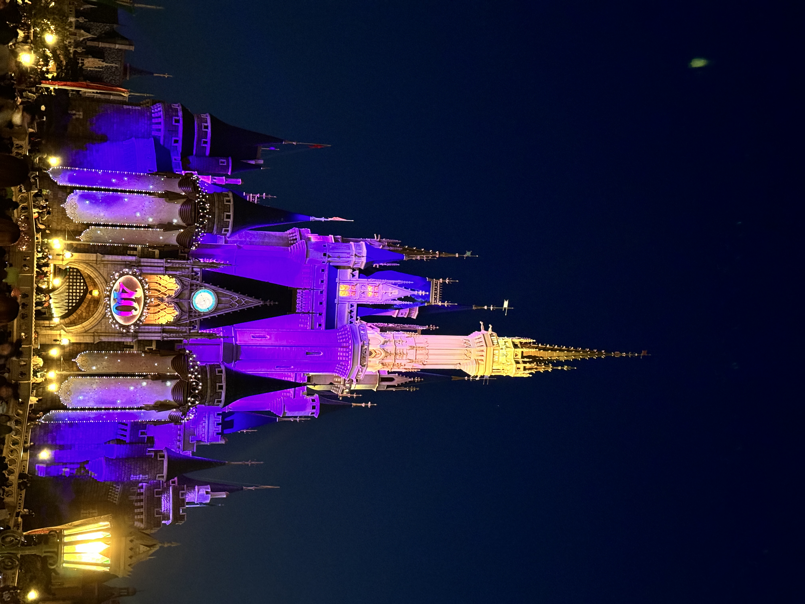
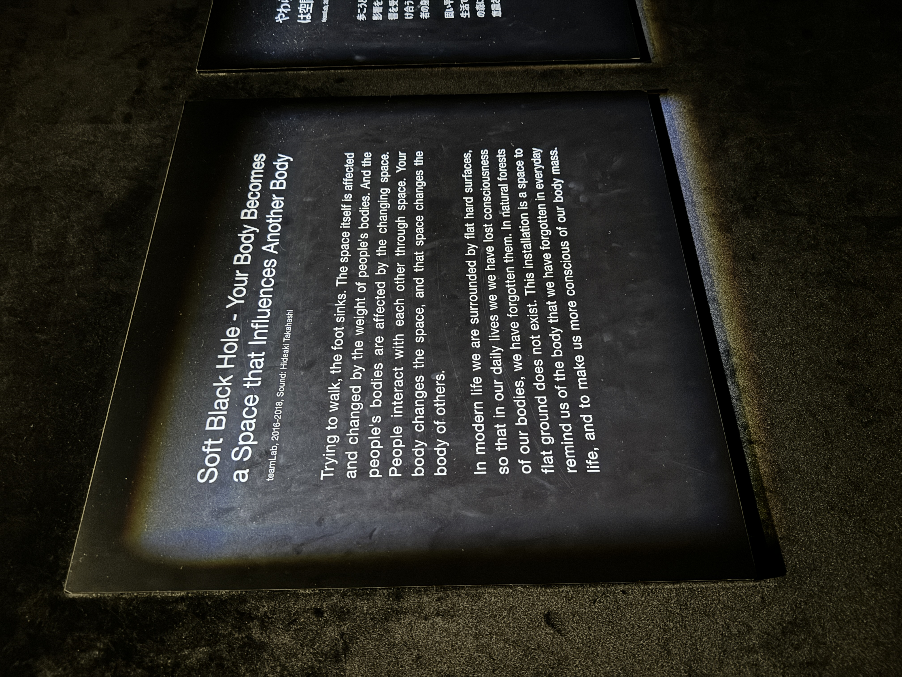
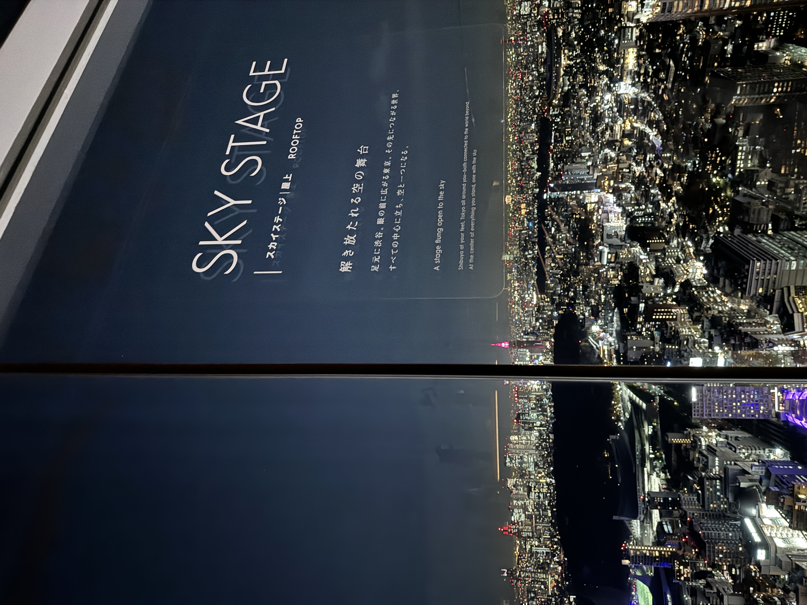

Japan · November · 14 Days
This was our third time in Japan, and all three times in November. You'd think by the third visit the sense of arrival would soften, that the strangeness would have worn off, that the country would have started to feel familiar in the way that places do when you've been before. It hasn't. Japan still manages, every single time, to feel like the first time.
We landed in Osaka on a Tuesday afternoon, took the Nankai Airport Express straight into Namba, and by 7pm we were standing in Dotonbori with takoyaki (octopus balls, chewy, hot, slightly dangerous) burning our fingers and the Glico Running Man glowing above the canal. The jetlag hadn't even arrived yet and Japan had already delivered.
Most people treat Osaka as a one-night stopover on the way to Kyoto. We think that's a mistake.
Osaka has an energy that Kyoto doesn't, looser, louder, more focused on eating well and enjoying itself. The city's unofficial motto is kuidaore, which roughly translates to "eat until you drop." We tried our best.

Back in Osaka on day three: the Umeda Sky Building's floating observatory looks out over the entire Kansai plain from the 40th floor, which is the correct place to begin to understand how large this city actually is. Then Osaka Castle in the afternoon, the Tonbori River cruise at dusk, and crab at Kani Douraku, the place with the enormous mechanical crab over the entrance, which turns out to be excellent rather than just theatrical.
Shinsaibashi: Canelita Sweets for vegan pastries, Pablo for the cheese tart. End every evening with Rikuro's cheesecake, soft as a cloud, dangerously easy to eat an entire box of.
Day two took us to Nara on the Kintetsu train, 40 minutes, no changes, completely straightforward. Nara Deer Park is the kind of place that sounds gimmicky in theory and is quietly magnificent in reality. The deer have lived alongside the city for over 1,200 years and they know it. They bow for food. They follow you through temple gates. One attached itself to us near Todaiji and spent a companionable 20 minutes investigating our bags.


We ate mochi from Nakatanidou, fresh-pounded on the street, chewy and warm, and then lunch at the okonomiyaki place near the station. It's run by an old couple, both well into their seventies, and the food was excellent. It also gave us, frankly, a little motivation for what we might want to do after retirement.
The train from Osaka to Kyoto takes exactly one hour. We've made this journey three times now and it still feels like a shift in register, from Osaka's street-level energy to Kyoto's quieter, more considered pace. Kyoto is the kind of city that rewards not having a plan.
That said, we had two things we weren't willing to skip.

Fushimi Inari in the late afternoon. Everyone goes to Fushimi Inari and everyone goes at the wrong time, mid-morning, in the middle of a tour group. Go at 4pm. Walk up past the first ridge where the crowds thin out. The path keeps climbing through thousands of vermilion gates and eventually you decide it's enough walking for the day and head back, but not before that hour of near-silence in the gates stays with you.

Kinkaku-ji, the Golden Pavilion, at opening time. We arrived at 9am and had perhaps fifteen minutes before the crowds filled the viewing area. In those fifteen minutes, with the gold reflection sitting perfectly still in the pond and the maple trees burning behind it, we both understood why people photograph this place obsessively. It is, quite simply, one of the most beautiful things we have ever seen. You will also hear "Kawaii!", Japanese for cute, lovely, at every turn.
"The bamboo forest gets photographed so heavily that it's easy to assume it will disappoint in person. It doesn't."

The second Kyoto day was for Arashiyama. Stand inside the bamboo on a November morning and look up, the stalks are forty feet tall and the light comes through in long filtered shafts. Then spend the afternoon in Gion, walking the stone-paved lanes when the lanterns are lit. Dinner: ramen at Mushoshin Gion, a hole-in-the-wall with a queue outside and a rich, deeply-seasoned broth that's completely worth it. Then matcha parfait at Saryo Tsujiri, one of those things you think about on the flight home.

Here's the thing about Mt. Fuji that no one tells you: you probably won't see it. Fuji is covered by cloud roughly 60% of the time. It is famously, almost perversely shy for the most iconic mountain in the world. We knew this going in, this was our second time in the Fuji Five Lakes area, and we still felt the particular low-grade anxiety of watching the weather app and trying to will a mountain into visibility.
We got lucky. Both mornings were clear.


Two days here: the Panoramic Ropeway on day one for a view of both the lake and the mountain simultaneously. Day two: the Narusawa Ice Cave, and a Swan Boat on the lake in late afternoon when the light is going amber. We sent our bags ahead to Tokyo overnight (¥1,500, delivered to our hotel by morning, Japan does things like this), ate ramen at a street-side van, and went to bed early.
We have stayed in Tokyo for three days, five days, and now six days. It is never enough.

Disneyland, a full day, and we are not embarrassed about this. Tokyo Disneyland is operating at a level that other Disney parks aren't. Everything runs. The food is better. The crowds are managed with extraordinary precision. We were there from opening to closing and came home demolished and happy.
Team Labs Borderless, an evening of digital art that genuinely defies description. Rooms that react to your movement, light that pools on the floor like water, flowers that grow and bloom around you. We spent three hours there and it felt like thirty minutes.

Toyosu Fish Market at dawn. Senso-ji in Asakusa at 7am, before the tourist groups arrive. Shibuya Crossing at night, yes, it's touristy, and yes you have to do it. Stand on the second floor of the Starbucks opposite and watch the human tide. Then take the lift up to Shibuya Sky and see the entire city laid out at night. Don't forget to find the statue of Hachiko nearby, the loyal dog immortalised in the Richard Gere film.

Golden Gai in Shinjuku, a tiny grid of lanes packed with bars the size of large wardrobes, most with six seats, each with its own personality. We squeezed into one playing old French film soundtracks, ordered whisky, and spent two hours talking to a retired Japanese architect. This is why you travel.
And dinner at Florilege. We had been trying to book this restaurant for two years. The French-Japanese tasting menu, eight courses, each one precise and surprising, was everything we'd hoped for. It may be in the top five meals we've had anywhere. It was our anniversary, and as they say, Happy Wife, Happy Life.
We've been to Japan three times. We expected the temples, the food, the efficiency, the autumn colour. What we didn't fully expect, even this time, was how gentle the whole experience was.
November in Japan is crisp and dry, Osaka and Kyoto sit around 10–16°C during the day, Tokyo slightly cooler. Light layers work perfectly: a base, a mid-layer sweater, and a packable jacket for evenings. Kawaguchiko drops to near-zero after dark so bring something warm for lakeside evenings. Good walking shoes are non-negotiable, you will cover 12–15km on most days.
Japan is a country that takes enormous care of you as a visitor. The trains announce stations in four languages. The convenience store staff wrap your purchase with the same attention a department store would. A stranger at Kawaguchiko station noticed we were looking at the bus map and spent ten minutes walking us to the right platform. Nobody asked for anything in return.
"There is a word in Japanese, omotenashi, that gets translated as 'hospitality' but means something closer to 'anticipating what someone needs before they ask.' Japan runs on this principle."
After 14 days you start to take it for granted, and then you land at home and notice its absence immediately. That's why we keep going back.
Planning a trip to Japan? The itinerary that we ran, Osaka, Nara, Kyoto, Kawaguchiko, Tokyo, 14 days, is on the site.
Message us on WhatsApp